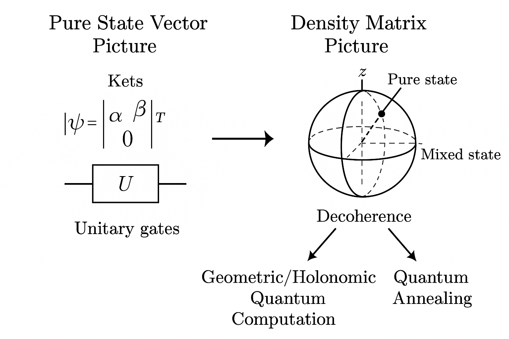
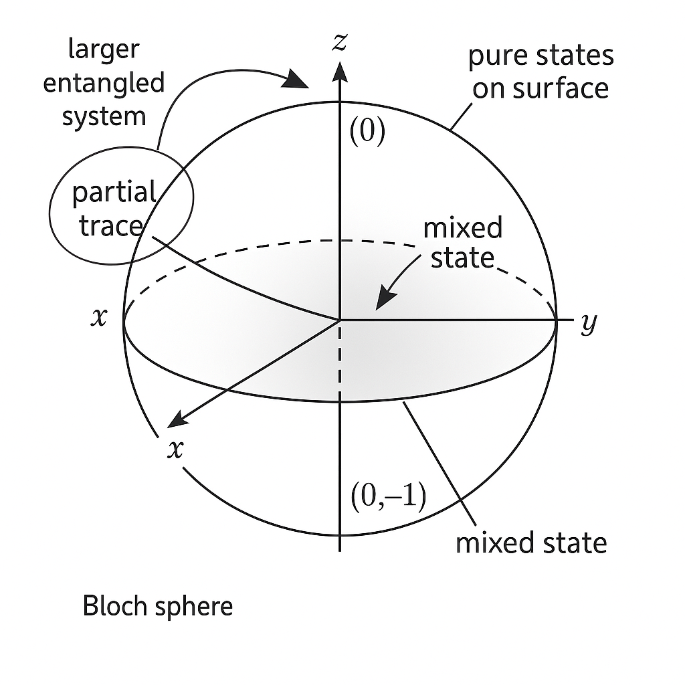
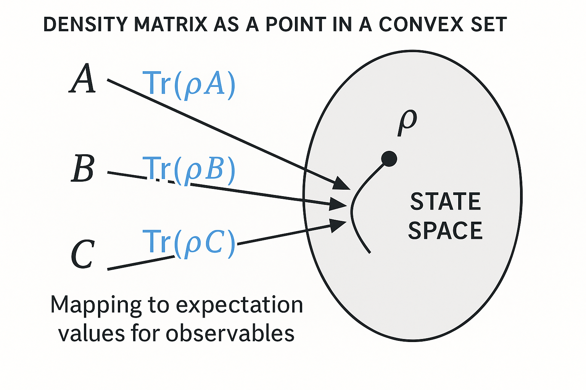
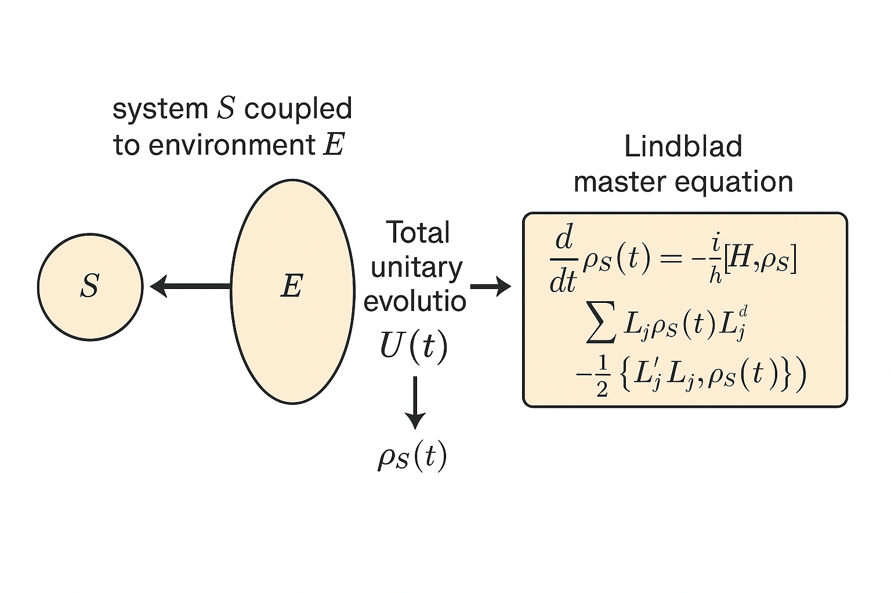
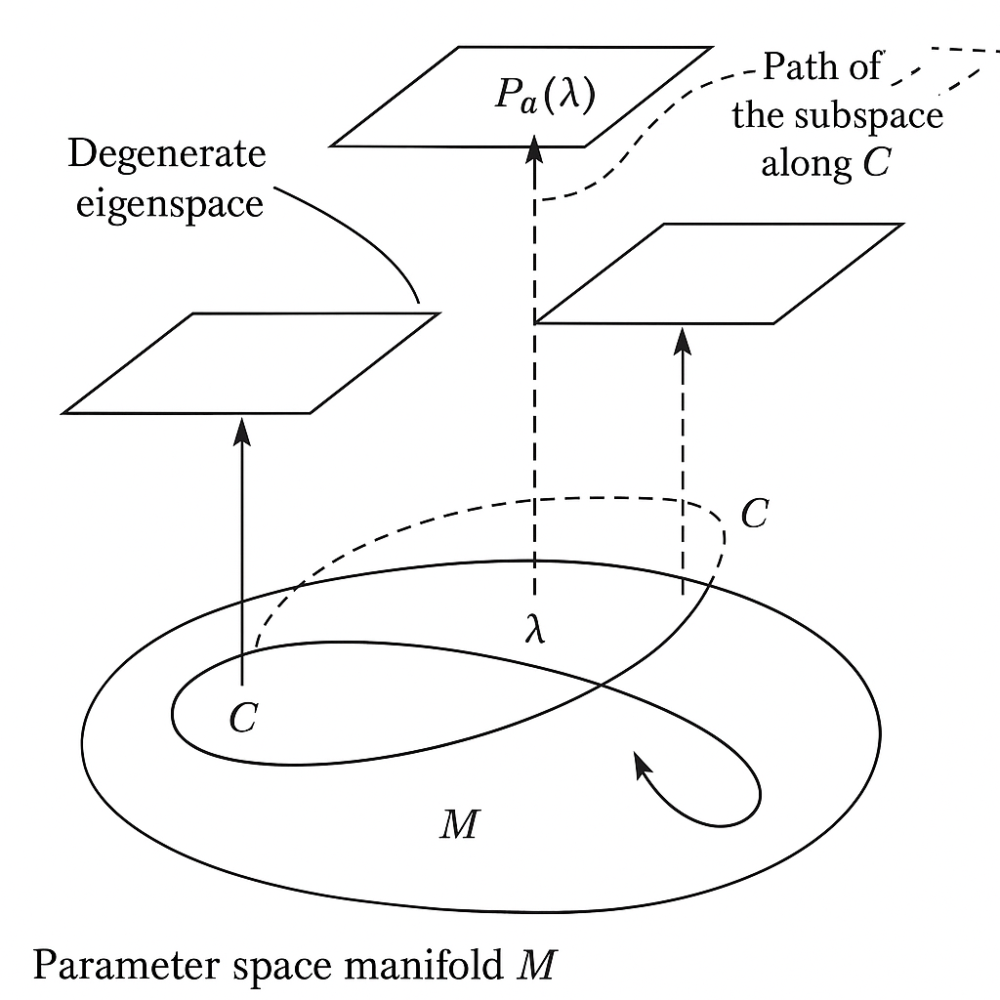
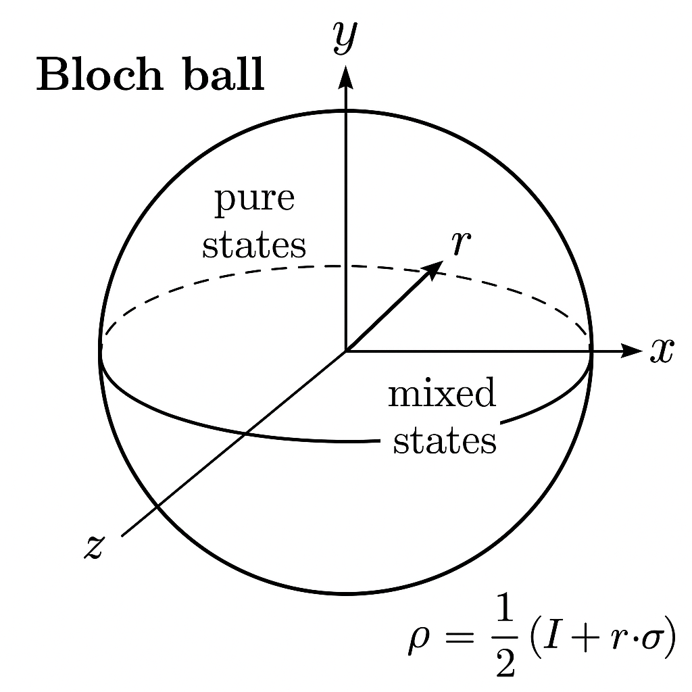
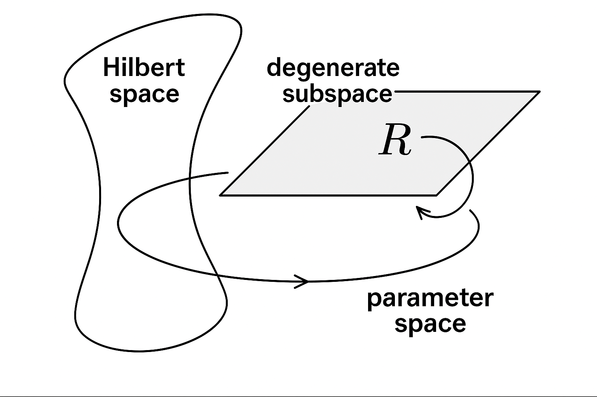

Generated by ChatGPT on 2025-12-16
逐字稿下載：ChatGPT_zh_L01_第_1_講_Density_matrix_Holonomic_Quantum_Computation.txt
完整音檔：
Segment 1:
Segment 2:
Segment 3:
Segment 4:
Segment 5:
Segment 6:
Segment 7:
Segment 8:
Segment 9:
Segment 10:
本講作為「Density Matrix Holonomic Quantum Computation」系列的第一講，目標是從密度矩陣（density matrix）的觀點，建立之後探討 Berry phase、幾何相位、Holonomic Quantum Computation (HQC)、以及 Holonomic Quantum Annealing 的理論基石。
本講將聚焦於：
在標準的量子計算教科書中，我們習慣使用 純態向量 \( \lvert \psi \rangle \) 來描述量子比特與其演化，例如： \[ \lvert \psi(t) \rangle = U(t) \lvert \psi(0) \rangle, \] 其中 \( U(t) \) 為酉演化算符。然而，實際的量子計算裝置與量子退火（Quantum Annealing, QA）系統，都不可避免地與環境耦合，導致：
這些因素使得單純用純態向量難以完整描述整個動力學。密度矩陣形式不僅自然地包含混合態，亦是描述開放量子系統、量子熱力學、以及實驗可觀測量的標準工具。
而 Holonomic Quantum Computation 的核心概念是利用「幾何性」來達成對退相干與控制誤差較具魯棒性的量子邏輯操作。若要在實際存在雜訊與開放性系統中依舊談論「幾何性」，我們就必須在密度矩陣的語言中，理解：
因此，本系列課程會刻意將整個 Holonomic Quantum Computation 及 Quantum Annealing 的討論，都在密度矩陣框架下進行，而不是把密度矩陣當作附錄或次要視角。

在有限維希爾伯特空間 \( \mathcal{H} \)（例如 \( n \) 個量子比特的 \( \mathcal{H} = (\mathbb{C}^2)^{\otimes n} \)）中，一個量子態由密度算符（密度矩陣）\( \rho \) 表示，定義為：
任一密度矩陣皆可寫成 \[ \rho = \sum_i p_i \lvert \psi_i \rangle \langle \psi_i \rvert, \quad p_i \ge 0, \quad \sum_i p_i = 1. \]
直覺解釋：純態對應「我們對系統具有最大可能的量子資訊」，混合態則代表有統計不確定性，可能是：
這一點在 Holonomic QC 裡格外重要：在實作時，邏輯量子比特為某超空間的子系統，其他物理自由度與環境經常被跡出，我們自然得到混合態描述。

由於 \( \rho \) 是正定且自伴，可正交對角化。存在正交規一本徵基 \( \{ \lvert \phi_k \rangle \} \) 及本徵值 \( \lambda_k \ge 0 \) 使得 \[ \rho = \sum_k \lambda_k \lvert \phi_k \rangle \langle \phi_k \rvert,\quad \sum_k \lambda_k = 1. \]
譜分解的意義：
注意：雖然任意密度矩陣都可以有許多「混合分解」 \[ \rho = \sum_i p_i \lvert \psi_i \rangle \langle \psi_i \rvert \] （不同的 \( \{ p_i, \lvert \psi_i \rangle \} \)），但譜分解是唯一的（除了本徵向量的相位與退化子空間的基選擇）。在幾何量子計算中，我們特別關心「退化本徵子空間」及其在參數空間中的平行運輸，這會導致非阿貝爾的幾何相位（holonomy）。
對任一可觀測量 \( A = A^\dagger \)，其在狀態 \( \rho \) 中的期望值為 \[ \langle A \rangle_\rho = \mathrm{Tr}(\rho A). \]
此公式包含純態情形： \[ \rho = \lvert \psi \rangle \langle \psi \rvert \quad\Rightarrow\quad \langle A \rangle_\rho = \langle \psi \lvert A \rvert \psi \rangle. \] 這裡重點在於：所有物理可測量的量都可以以 \(\rho\) 表示，這使我們在引入幾何性時，不必拘泥於態向量本身（其相位不具物理意義），而可在密度矩陣空間中尋找幾何結構。

若量子系統由哈密頓量 \( H(t) \) 描述（可顯含時間），且系統與環境完全隔離（closed system），則純態滿足薛丁格方程： \[ i \hbar \frac{d}{dt} \lvert \psi(t) \rangle = H(t) \lvert \psi(t) \rangle. \]
對於密度矩陣形式，我們可以從 \[ \rho(t) = \lvert \psi(t) \rangle \langle \psi(t) \rvert \] 直接微分： \[ \frac{d}{dt} \rho(t) = \frac{d}{dt} \big( \lvert \psi(t) \rangle \langle \psi(t) \rvert \big) = \left( \frac{d}{dt} \lvert \psi(t) \rangle \right) \langle \psi(t) \rvert + \lvert \psi(t) \rangle \left( \frac{d}{dt} \langle \psi(t) \rvert \right). \] 利用薛丁格方程及其共軛 \[ \frac{d}{dt} \lvert \psi(t) \rangle = -\frac{i}{\hbar} H(t) \lvert \psi(t) \rangle, \quad \frac{d}{dt} \langle \psi(t) \rvert = \frac{i}{\hbar} \langle \psi(t) \rvert H(t), \] 得 \[ \frac{d}{dt} \rho(t) = -\frac{i}{\hbar} H(t) \lvert \psi(t) \rangle \langle \psi(t) \rvert + \frac{i}{\hbar} \lvert \psi(t) \rangle \langle \psi(t) \rvert H(t). \] 亦即 \[ \frac{d}{dt} \rho(t) = -\frac{i}{\hbar} [H(t), \rho(t)], \] 這就是李維爾–馮紐曼方程（Liouville–von Neumann equation）。
更一般地，對任何初始密度矩陣 \( \rho(0) \)，若系統封閉，則時間演化由酉算符 \( U(t) \) 給出： \[ \rho(t) = U(t)\, \rho(0)\, U^\dagger(t), \] 其中 \[ i \hbar \frac{d}{dt} U(t) = H(t) U(t), \quad U(0) = \mathbb{I}. \] 微分上述式子可驗證同樣滿足李維爾–馮紐曼方程。
直覺：在封閉系統中，密度矩陣的演化是酉共軛，因此保留：
這「本徵子空間隨時間演化」的結構，正是後續幾何相位與非阿貝爾 holonomy 的來源。
實際上，Holonomic 量子閘或量子退火系統多為開放系統，可由系統+環境總哈密頓量
\[
H_{\text{tot}} = H_S \otimes \mathbb{I}_E + \mathbb{I}_S \otimes H_E + H_{SE}
\]
描述，其中 \( H_{SE} \) 是系統與環境的耦合。
總態密度矩陣 \( \chi(t) \) 滿足封閉系統的李維爾–馮紐曼方程，但我們只關心系統子空間：
\[
\rho_S(t) = \mathrm{Tr}_E \big( \chi(t) \big).
\]
在若干假設下（馬可夫近似、Born 近似等），可導出 Lindblad 型主方程
\[
\frac{d}{dt} \rho_S(t)
= -\frac{i}{\hbar} [H_S(t), \rho_S(t)]
+ \sum_\alpha \left( L_\alpha \rho_S(t) L_\alpha^\dagger
- \frac{1}{2} \{ L_\alpha^\dagger L_\alpha, \rho_S(t) \} \right),
\]
這裡 \( L_\alpha \) 為 Lindblad 算符，描述退相干與耗散。
對 Holonomic Quantum Computation 的挑戰在於：
所以本系列將逐步探討：如何在密度矩陣與主方程框架下，定義與實現「幾何性」與「holonomy」，並將其應用於 Quantum Annealing 與 gate model 的等價性分析中。

幾何相位（Berry phase）與 Holonomic QC 的核心在於：系統的哈密頓量 \( H(\lambda) \) 依賴於某些慢變的控制參數 \( \lambda \in \mathcal{M} \)（參數流形），例如磁場方向、雷射相位、耦合強度等。
令
\[
H(\lambda) \lvert n(\lambda) \rangle = E_n(\lambda) \lvert n(\lambda) \rangle
\]
為瞬時本徵值問題（假設離散譜）。對於一個特定本徵值（可能退化），可以定義對應的投影算符：
\[
P_a(\lambda) = \sum_{k \in \mathcal{D}_a} \lvert n_k(\lambda) \rangle \langle n_k(\lambda) \rvert,
\]
其中 \( \mathcal{D}_a \) 為對應退化子空間的索引集合。
這些 \( P_a(\lambda) \) 滿足：
在密度矩陣觀點下，若系統在時間 \( t \) 的狀態主要支撐於某一退化子空間對應的投影 \( P_a(\lambda(t)) \)，則可以寫成 \[ \rho(t) = P_a(\lambda(t)) \rho(t) P_a(\lambda(t)) \] 或 \[ \rho(t) = \sum_{i,j \in \mathcal{D}_a} \rho_{ij}(t) \lvert n_i(\lambda(t)) \rangle \langle n_j(\lambda(t)) \rvert. \]
當參數 \( \lambda \) 沿著某閉合路徑 \( \mathcal{C} \subset \mathcal{M} \) 緩慢變化（絕熱條件），系統在該退化子空間內的密度矩陣將獲得一個由參數空間幾何結構決定的「holonomy」，這是 Holonomic QC 的基礎。我們會在後續講中詳細推導。

從更幾何的觀點，純態幾何相位常被詮釋為：在參數空間 \( \mathcal{M} \) 上，存在一個「射影希爾伯特空間」的纖維束，上面定義了聯絡（connection），絕熱演化相當於在纖維中進行平行運輸，閉合路徑給出 holonomy。
在密度矩陣的情境下，情形更豐富：
我們將看到，Holonomic QC 實際上可被視為：利用外部控制參數使得邏輯子空間在希爾伯特空間中沿著某路徑平行運輸，最終得到一個非平凡的 holonomy，對該子空間中的密度矩陣實作量子閘。
作為進一步引導，我們回顧單量子比特的密度矩陣幾何結構，因為它提供了直覺的圖像來理解「混合態」與「幾何結構」的關係，這會在多比特與退化子空間的情況中以更抽象的方式重演。
任一單比特密度矩陣都可寫成 \[ \rho = \frac{1}{2}(\mathbb{I} + \vec{r} \cdot \vec{\sigma}), \] 其中
純態 對應 \( \lVert \vec{r} \rVert = 1 \)，位於「Bloch 球」的表面；
混合態 對應 \( \lVert \vec{r} \rVert < 1 \)，在球內部。

若系統由哈密頓量
\[
H = \frac{\hbar}{2} \vec{\Omega} \cdot \vec{\sigma}
\]
產生演化，則密度矩陣滿足
\[
\frac{d}{dt} \rho(t) = -\frac{i}{\hbar} [H, \rho(t)].
\]
以 Bloch 向量改寫，可得
\[
\frac{d}{dt} \vec{r}(t) = \vec{\Omega} \times \vec{r}(t),
\]
即 Bloch 向量繞著 \( \vec{\Omega} \) 旋轉。
這給出一個非常直覺的圖像：酉演化在 Bloch 球上等價於三維剛體旋轉群 \( SO(3) \) 的作用。
後續在談及「幾何相位」時，對單比特而言，某些控制參數（如磁場方向）沿著球面路徑變化時，向量會附帶一個額外的相位或幾何結構；在多比特與退化子空間的情況下，則會升級為非阿貝爾 holonomy。
密度矩陣版本 的幾何相位與 holonomy，即可視為在「狀態空間與參數空間之間」構成的更高維幾何結構，此圖像在 Bloch 球上是最簡單的例子。
本講不會詳細推導 Berry phase 的所有公式，而是提出關鍵觀念，為下一講做準備，並說明如何在密度矩陣框架下延伸這些概念。
考慮依賴參數 \( \lambda \) 的哈密頓量 \( H(\lambda) \)，及其規一化本徵態 \( \lvert n(\lambda) \rangle \)：
\[
H(\lambda) \lvert n(\lambda) \rangle = E_n(\lambda) \lvert n(\lambda) \rangle.
\]
假設系統從 \( t = 0 \) 開始處於本徵態 \( \lvert n(\lambda(0)) \rangle \)，隨著參數 \( \lambda(t) \) 緩慢（絕熱）變化，走完一個閉合路徑 \( \mathcal{C} \)，即 \( \lambda(T) = \lambda(0) \)。
則在絕熱極限下，最終態可寫為
\[
\lvert \psi(T) \rangle
= e^{i\gamma_n(\mathcal{C})} e^{-\frac{i}{\hbar}\int_0^T E_n(\lambda(t))\,dt}
\lvert n(\lambda(0)) \rangle,
\]
其中
\[
\gamma_n(\mathcal{C}) = i \oint_{\mathcal{C}} \langle n(\lambda) \lvert \nabla_\lambda n(\lambda) \rvert \, \cdot d\lambda
\]
為 Berry 幾何相位。
此結果可詮釋為：在參數空間上，存在聯絡一形式
\[
\mathcal{A}_n(\lambda) = i \langle n(\lambda) \lvert \nabla_\lambda n(\lambda) \rangle,
\]
而 \( \gamma_n(\mathcal{C}) \) 就是此聯絡沿著路徑 \( \mathcal{C} \) 的線積分。
這是 阿貝爾 幾何相位，因為 \(\mathcal{A}_n\) 是 U(1) 聯絡。
當本徵值 \( E_a(\lambda) \) 存在退化（維度 \( d_a > 1 \)）時，本徵態不是唯一而是一組
\[
\{ \lvert n_k(\lambda) \rangle \}_{k=1}^{d_a}.
\]
在絕熱演化中，系統的動力學將限制在該退化子空間內，但其基底會在演化過程中「旋轉」，這旋轉即為非阿貝爾幾何相位（Wilczek–Zee holonomy）。
聯絡變成一個 \( d_a \times d_a \) 的矩陣：
\[
\mathcal{A}_{kl}(\lambda) = i \langle n_k(\lambda) \lvert \nabla_\lambda n_l(\lambda) \rangle,
\]
對應到 \( U(d_a) \) 聯絡，其沿路徑 \( \mathcal{C} \) 的平行運輸給出路徑有序指數：
\[
U_{\text{geo}}(\mathcal{C}) = \mathcal{P} \exp \left( -\oint_{\mathcal{C}} \mathcal{A}(\lambda) \cdot d\lambda \right),
\]
這個 \( U_{\text{geo}} \) 就是 non-Abelian holonomy。
Holonomic Quantum Computation 的關鍵洞見在於：
選取適當的退化子空間作為「邏輯子空間」，並設計參數路徑 \( \mathcal{C} \) 使得 \( U_{\text{geo}}(\mathcal{C}) \) 實現所需的量子邏輯閘（例如單比特旋轉、兩比特控制閘等）。

上述 Berry phase 與 Wilczek–Zee holonomy 是以純態波函數為基礎：
但在實際 Holonomic QC 與 Quantum Annealing 中：
因此我們需要重新問：
後續講次將介紹多種密度矩陣層級的幾何結構，例如：
為了讓本系列後續主題（Quantum Annealing、Ising 最佳化、Holonomic Quantum Annealing 等）在你的腦中有一個清晰藍圖，本節簡要預告密度矩陣版本的關聯結構。
典型量子退火使用時間依賴哈密頓量 \[ H(t) = A(t) H_{\text{init}} + B(t) H_{\text{problem}}, \] 其中
在密度矩陣描述下，對封閉系統，退火過程為
\[
\frac{d}{dt} \rho(t) = -\frac{i}{\hbar} [H(t), \rho(t)].
\]
在實際裝置中，需引入主方程，以描述熱浴、退相干等。
我們之所以要在密度矩陣框架下視角統一，是為了後續能夠自然地將：
都看成是對密度矩陣的某類演化映射（酉共軛或 Lindbladian 流），並比較它們在最佳化問題上的等價性與差異。
在 gate model 中，一個量子邏輯閘以酉算符 \( U \) 描述，其對密度矩陣的作用為 \[ \rho \mapsto U \rho U^\dagger. \]
而在 Holonomic Quantum Computation 中，我們設計參數循環 \( \mathcal{C} \) 使得在某邏輯子空間 \( \mathcal{H}_{\text{L}} \) 中，絕熱演化後產生的 holonomy \( U_{\text{geo}}(\mathcal{C}) \) 即為欲實現的邏輯閘。密度矩陣層級上，等價地 \[ \rho_{\text{L}} \mapsto U_{\text{geo}}(\mathcal{C})\, \rho_{\text{L}}\, U_{\text{geo}}^\dagger(\mathcal{C}). \]
本系列將展示：
而將 Quantum Annealing 放入同一密度矩陣框架，我們可以更清楚地討論：
本講我們完成了以下目標：
下一講（主題 2）中，我們將正式進入：